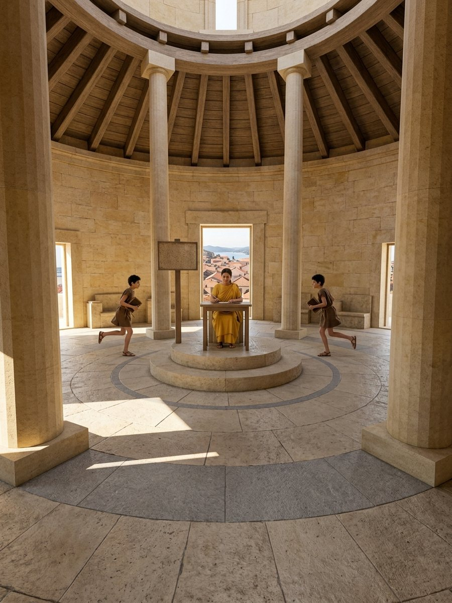
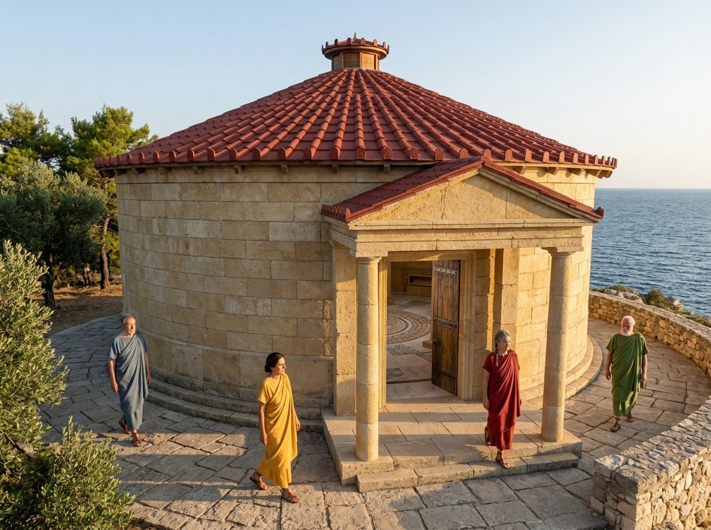
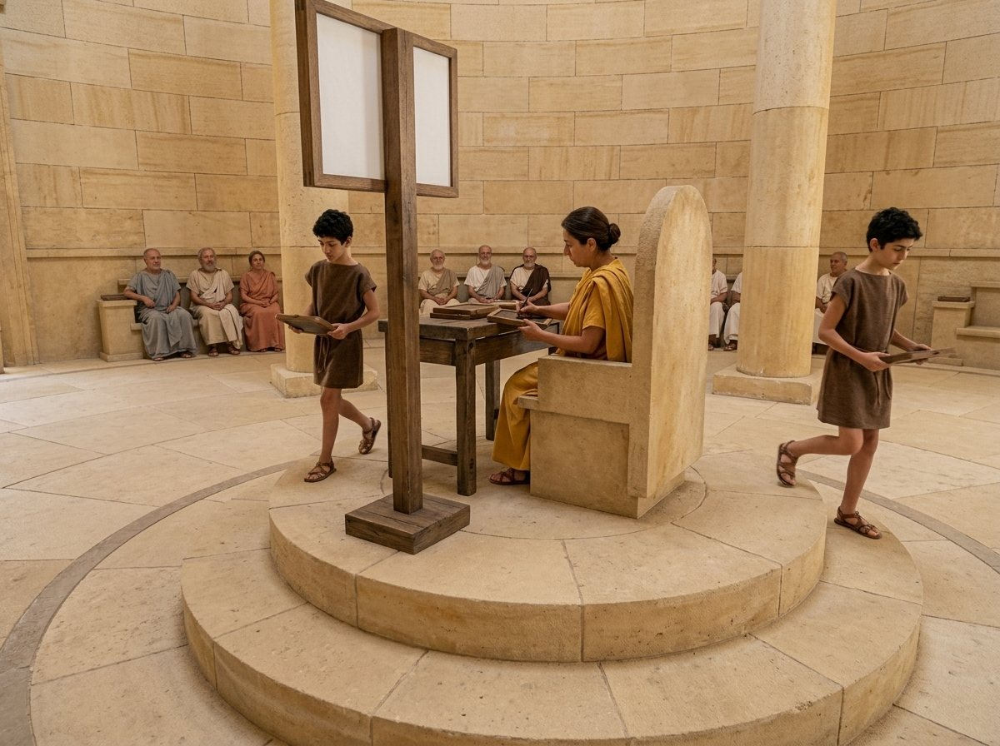
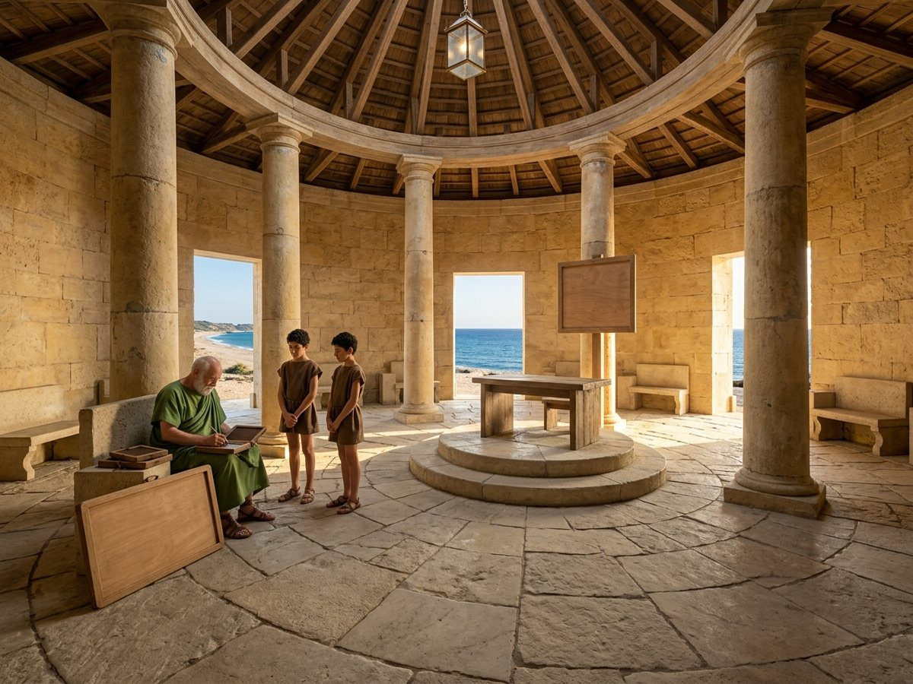
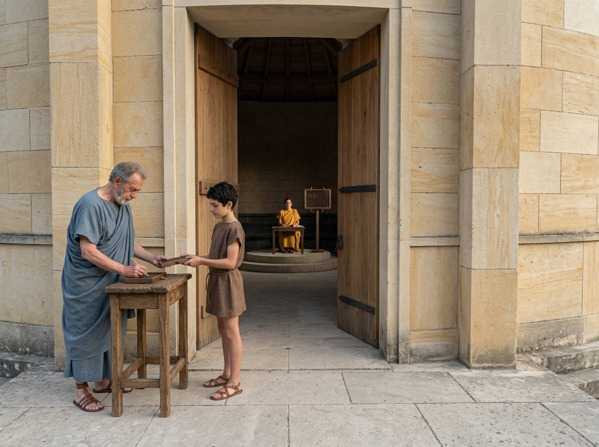
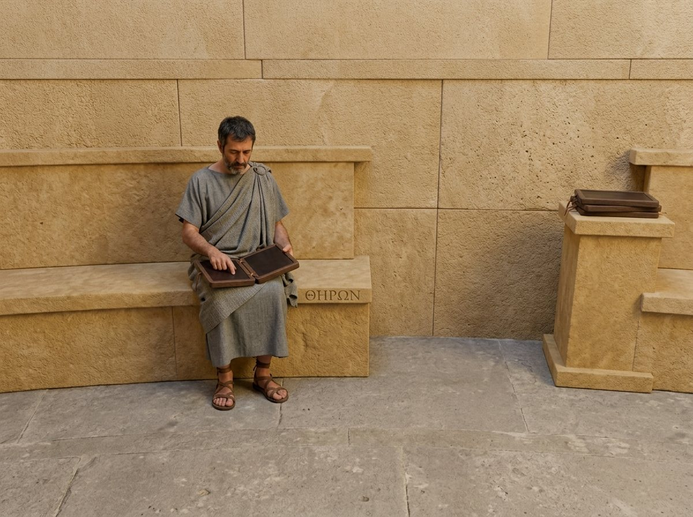

Many systems put one leader in charge at a time. When the leader falls silent, how does another take over without losing anything the last one promised?
We find out by exploring how Schedia, a Greek city on Paxos with laws of its own, kept its law from a podium that one legislator held at a time, and how a new holder took over when the last one fell silent.
After Brian M. Oki and Barbara H. Liskov, Viewstamped Replication: A New Primary Copy Method to Support Highly-Available Distributed Systems, 1988

A service is kept on several machines. One of them, the primary, orders every operation and sends it to the others, the backups.
This edition tells it with five legislators in a round hall who keep one law, and a podium only one of them may write from.
The primary takes operations and sends them on. Green ones are held by a majority.

Schedia, the city on the eastern arm of Paxos, keeps its own law. The law is made in the Tholos, a round hall where nobody can be heard across the floor and everything goes by messenger.*
The council has five legislators, and each keeps a copy of the law on wax tablets at a bench of their own.
The law is a list of lines, written one after another: harbour dues are two obols a hull; the cove is closed to nets in spring; the dues above are halved for boats of Schedia. Every copy must hold the same lines in the same order, because a line can depend on the lines before it. The halving means nothing without the dues it halves.
The five copies behave as a single record kept in a single place. A citizen never sees two different laws standing in the same place.
Once a law has passed, it stands for good, in its place, whoever holds the podium afterwards.
A module group of cohorts behaves as a single logical entity; nodes crash (fail-stop) and recover; the network may lose, delay, duplicate and reorder messages and may partition; failures are not Byzantine. Events known to a majority of cohorts survive view changes. §1–2, §4.
The podium stands at the centre of the Tholos, and one legislator at a time holds it: the holder. Only the holder adds lines to the law.
The podium is no pulpit. Nobody can be heard from it either. It is an office: the holder writes each line at the desk, gives it the next number, and has it carried to every bench. The others copy what the holder sends them, and do nothing else with the law.

The holder numbers each line in turn and gives it to the runners.
Each bench has its own runner, who delivers the lines in number order and never skips one. A runner may be held up. A bench that holds line 12 holds lines 1 to 11 as well.
Citizens at the doors send petitions to the podium. A petition that reaches a bench is sent back with the holder's name.
The primary executes calls; backups are passive and receive event records. The communication buffer delivers event records reliably, in timestamp order, to every backup in the view; a failure to deliver leads to a view change. A cohort that is not the active primary rejects calls with the current viewid and primary. §2, §3.3.
A petition becomes law when its line is safe, and a line is safe once a majority of the council hold it: three of the five, the holder and two others.
So the holder does not wait for everyone. Each runner comes back with the bench's word, I hold everything up to line 12. As soon as two benches have said so, line 12 passes, and only then does the holder answer the petitioner.
The Tholos from above. The ringed legislator holds the podium. Click a bench to have its legislator step out of reach, or come back.
Okios holds the podium. Theron has stepped out. Write the next line.
Why not wait for all five? Someone is nearly always out of reach, and a council that waited for all five would pass nothing. Why not one other, or none? The holder may be gone tomorrow, and the next holder will start from what a majority can show. Any two majorities of five share a legislator, as any two majorities in the Chamber across the bay share a member.* A line three hold is always found again.
Lines that no majority holds yet are drafts. A change of holder may lose them. That is no harm: nobody was told they were law.
force-to(v) waits until a sub-majority of backups, one fewer than a majority of the configuration, know every event of the current view up to v.ts; with the primary, a majority then knows it. §3. In the paper the moments that must wait are a transaction's prepare and commit; this book, keeping one law book, has only one, the passing of a law.
A line's number means something only under one holder, so every spell at the podium gets a mark of its own: a board, which hangs on its post beside the desk.
A board bears a count and the name of the legislator who raised it: board 7, Liskovia. Boards are ordered by count, and two with the same count by name, in the order of the alphabet. Line numbers start again under every board, so a line is known by board and line. Each legislator also keeps a note in the margin: for every board they have served under, the last line they hold.
Choose any two.
Under one board, a legislator who holds a later line holds every earlier one, because runners never skip a line. And a legislator who holds any line of a later board holds everything its holder started that board with, because every board opens with the holder sending the whole law.
viewid = ⟨cnt, mid⟩, totally ordered and unique to its creator; a timestamp, unique and ordered within a view; viewstamp = ⟨viewid, ts⟩; each cohort's history is a sequence of viewstamps, one per viewid, and its state reflects exactly the events up to each. §2, Figures 1 and 4.
A silent podium is noticed through the roll: every so often each legislator sends each of the others a note, I am here.
A legislator who stops hearing from someone, or hears again from someone who was away, or has just come back from home, calls for a new board. Whoever does so is the caller. A silent legislator may have gone home, or stepped out, or their notes may be slow. The caller cannot tell, and does not need to: a board is called either way.
The caller takes a count higher than any board they have seen, adds their own name, and sends every legislator an invitation. A legislator invited to a board higher than any they have seen accepts, stops working under the old board, and answers in one of two ways.

I hold up to board 6, line 40, and whether they held the podium under board 6.
I have lost my tablets. My bench says board 6.
And if two legislators call at once? The higher board wins. The lower caller, invited to the higher board, accepts it and answers like anyone else. Several callers slow the council down, but they never confuse it.
“I'm alive” messages; the view manager's invitations with a new viewid; a normal acceptance carries the cohort's viewstamp and whether it was primary, a crash-accept only its viewid. §4.
A new board forms when a majority of the council has answered, and among the answers is someone sure to hold every law that has ever passed. Scroll slowly: the picture moves with you.
Line 12 has passed: Okios, Liskovia and Kleon hold it. Melissa and Theron hold up to line 10. Okios has written line 13, a draft that no bench holds yet.
Okios steps out, and no note from him reaches the benches. Liskovia stops hearing from the podium.
She takes a count higher than any board she has seen, adds her own name, and sends every legislator an invitation.
Kleon answers board 6, line 12. Melissa answers board 6, line 10. With Liskovia's own, that is three of five. Theron's answer is slow, and nobody waits for it.
Three answers are a majority; every passed law is held by three; the two threes share someone. The answer showing the latest board and line holds everything that passed. Here Liskovia and Kleon both show line 12, and Liskovia takes the podium.
Liskovia opens board 7 by sending every member the whole law as she holds it, with its notes. Melissa now holds everything that passed.
Okios sees board 7 and joins it. His tablets ran past the opening line with a draft that never passed, so he smooths line 13 away. Nobody was told it was law.
If the old holder is among those with the latest line, the old holder is preferred: nothing then changes but the board.
Write b and c for boards (views), ordered as boards are. A line has passed under b when the holder of b and two other members hold it and every line before it. Claim. A line that passed under b is held by every member of every board that forms after b.
An answer without tablets changes things. Take board 6 again. Okios goes home and comes back with smooth wax, and Liskovia and Kleon step out. Okios, Melissa and Theron answer: a majority.
Should the board form? No. The only answers with tablets stop at line 10, and line 12 has passed. So a lost tablet is not simply left out. A board may form when a majority of the council has answered, and one of three things also holds.
A majority of the whole council answered with tablets. The overlap works as before.
Every answer without tablets names an older board than the latest shown by an answer with tablets. Whatever passed before that older board ended was carried into every later one.
They name the same board, and that board's holder answered with tablets. Every line starts at the podium, so the holder's tablets cover anyone else's that were lost.
Board 6, held by Okios. Line 12 has passed: Okios, Liskovia and Kleon held it. Melissa and Theron held up to line 10.
Everyone here last served under board 6, so the second condition has nothing to apply to. The page has tried every one of the 243 ways the five can answer: whenever a board forms, its holder has line 12.
And when no board may form? Nothing happens, for now. The caller waits and calls again. When Liskovia or Kleon comes back within reach, a board forms, and line 12 is in it.
A majority accepted, and (1) a majority accepted normally, or (2) crash-viewid < normal-viewid, or (3) crash-viewid = normal-viewid and the primary of that view accepted normally. The new primary is the cohort with the largest viewstamp, the old primary if possible. §4.

Okios holds board 6 and steps out onto the porch. For a while no runner reaches him. Inside, the others raise board 7, and Liskovia takes the podium. As far as Okios knows, board 6 still stands.
The holding does not go with the podium. It rides on the board's count, which every note carries. Okios may go on taking petitions at the porch door and writing lines under board 6.
Board 7 formed on a majority: Liskovia, Kleon and Melissa. Click Theron's bench to choose whether he has heard of board 7 yet.
Theron has not heard of board 7.
A citizen at the porch who asks Okios what the law says may hear his copy's answer, which may lack laws passed under board 7. He answers from what he holds, and passes nothing new. As soon as a runner reaches him, or he walks back in, he sees board 7 and joins it.
“The system performs correctly even if there are several active primaries … The old primary will not be able to prepare and commit user transactions, however, since it cannot force their effects to the backups.” §4.1.
Schedia keeps its law in wax. The tablets stay on the bench, and are smoothed when their legislator goes home.
Only two things are cut into the bench's stone: the legislator's name, and the last board they served under, recut whenever a board forms. That is the stone. Stepping out keeps the tablets. Going home loses them. A legislator back from home knows their name and their last board, and nothing of the law. They call for a new board at once, answer without tablets, and are brought up to date only by the new board's opening line.
Why keep the law in wax? Cutting every line in stone is slow, and wax is quick. Schedia counts on a majority remembering.

Board 6 again, with line 12 passed. In the morning all five are back and answer the call for board 7. Those who went home answer without tablets.
The paper names ways to make this rarer: keep a lasting record at the holder only, or give each member a supply that lets it write to lasting storage in the background. It leaves the choice to how much the law is worth.
Most of a cohort's state is volatile. Only mymid, configuration and mygroupid, written when the cohort is created, and cur-viewid, written at the end of each view change, are on stable storage. A recovered cohort sets up-to-date to false and starts a view change. A catastrophe, a majority crashed at once, “does not cause a group to enter a new view missing some needed information. Rather, it causes the algorithm to never again form a new view.” §4, §4.2.
The Parliament across the bay keeps the law of the rest of Paxos in a hall of the same kind: a rotunda where nobody can be heard, with legislators who come and go and messengers who take as long as they take.*
The two laws never meet: each covers its own city.* So the two halls can be compared like with like.
A Paxon legislator writes the decrees in indelible ink in a scroll of their own, and a legislator back from any absence still has everything.* Schedia's wax is quicker, and it asks that a majority not go home at once.
In the Chamber any legislator may start a ballot, and several may believe themselves president for a while, which costs time but never makes two scrolls disagree.* In Schedia only the holder writes, the benches only copy, and a change of holder is a step of its own.
The Chamber uses that fact for each decree's ballot. The Tholos uses it for each change of holder.
The two arrangements were found apart. Oki and Liskov published theirs in 1988; Lamport's account of the Parliament first circulated in 1989 and was not printed until 1998. That is why Schedia has a hall of its own on its own arm of the island.
The Tholos keeps passed laws through any change of holder. Five things it does not promise.
No. If notes keep going astray, a caller who stops waiting too soon forms a board without someone who could have answered, that legislator soon calls again, and the council can go on changing boards. The paper says so plainly and advises long waits and duplicate notes. Getting a new board is hoped for, not promised.
They cannot tell whether their petition was written down before the holder fell silent, and sending it again to the new holder might put it in the law twice. The paper's answer is to abandon the whole piece of work rather than risk doing it twice.
No. The paper builds all this for pieces of work that call on several councils and are settled together. There, work lost in a change of holder is abandoned. This telling keeps one council and one law, and lets the passing of a law stand for those moments.
Not here. Legislators stop, go home, come back and miss notes, but what they write and answer is true. Keeping order when some members lie is a harder task, with more members and more rounds of notes.
They ask. A petition that reaches the wrong bench comes back with the holder's name. The paper leans on a directory, always available, that says who belongs to each council, and notes that no council can be more available than it.
Every legislator is a replica, and the holder of the podium is the primary. Hover or tap to see who is who.
One primary orders everything, and a new primary starts from the fullest log a majority can show, so nothing committed is ever lost.
Replicas that lose their state can stop the group for good. They can never make it go on with something missing.
Setting Schedia and the Tholos
Leads to Keeping Order Among Liars
Outside this series Liskov & Cowling 2012, Viewstamped Replication Revisited · Ongaro & Ousterhout 2014, Raft
Brian M. Oki and Barbara H. Liskov, Viewstamped Replication: A New Primary Copy Method to Support Highly-Available Distributed Systems. Proceedings of the Seventh Annual ACM Symposium on Principles of Distributed Computing (PODC), Toronto, August 1988, 8–17. — The primary copy method, viewstamps, forcing to a sub-majority, the view change algorithm and its formation rule, and transaction processing with two-phase commit.
The ideas, plainly.
Oki and Liskov replicate a service over a small group of machines that may crash, recover and be cut off from one another, but never lie. One machine, the primary, does all the work and sends a record of each step to the backups, in order. A step is safe once a majority of the group knows it, so the primary waits for enough backups before it tells anyone a result is final.
Each period with one primary is a view, named by a view number, and each step is stamped with the view and its position in it: a viewstamp. When the primary seems to be gone, or the group's members change, any member can call a view change. It collects the viewstamps of a majority, and the member with the latest one becomes the new primary and starts the view by sending its whole state. Because any two majorities overlap, and because a later viewstamp implies knowledge of everything earlier, whatever a majority knew survives.
The machines keep almost everything in memory, so a crash loses a member's state; three extra conditions stop a view from forming on answers that cannot show what was made final. If a majority lose their state at once, the group stops for good rather than go on with something missing. An old primary that has not noticed a change can do no harm, because it can no longer reach a majority.
Brian Oki and Barbara Liskov are credited as Okios and Liskovia. Kleon, Melissa and Theron are ordinary Greek names for seats no author fills. Schedia's legislators are told apart by colour: Okios blue-grey, Liskovia saffron, Kleon green, Melissa madder red, Theron grey.
| the council of five, each with a copy of the law | A module group of cohorts; the fixed set is the configuration; three or five is typical. §2. |
| the law; a line | The group state; an event record. §2–3. |
| slow or lost messengers; stepping out; going home | A network that loses, delays and reorders messages and partitions; a partition; a crash. No Byzantine faults. §1. |
| one law; passed stays passed | The group behaves as one logical entity; events known to a majority survive view changes. §2, §4. |
| the podium; the holder; the benches | The primary; the backups, passive. §2. |
| a runner who never skips a line | The communication buffer: reliable delivery in timestamp order. §2. |
| a petition; sent back with the holder's name | A call from a client; rejection with the current viewid and primary. §3.1, §3.3. |
| Passed Means Three Hold It; waiting for two | force-to: wait for a sub-majority of backups. §3. In the paper, at prepare and commit. |
| a board; its count and name | A view; viewid = ⟨cnt, mid⟩. §2. |
| board and line; the note | Viewstamp = ⟨viewid, ts⟩; the history. §2. |
| The Later Line Knows More | In-order delivery: a later viewstamp for a view implies knowledge of every earlier event in it. §4. |
| the roll; the caller; an invitation | “I'm alive” messages; the view manager; an invitation with a new viewid. §4. |
| an answer with tablets; without | A normal acceptance with the viewstamp; a crash-accept with the viewid. §4. |
| when a board may form | A majority accepted, and conditions (1)–(3). §4. |
| who takes the podium; the opening line | The largest viewstamp, the old primary if possible; the “newview” record with view, history and state. §4. |
| What Passed Survives | The paper's informal argument; here set out by board. §2, §4. |
| Two Holders, One Law | Several active primaries; the old one cannot force. §4.1. |
| wax; the stone | Volatile state; mymid, configuration, mygroupid and cur-viewid on stable storage. §4, §4.2. |
| coming back from home | up-to-date = false; the cohort starts a view change. §4. |
| Stopped, Never Wrong | A catastrophe means no new view is ever formed. §4.2. |
| no promise of a new board | The algorithm is “not tolerant of lost messages and slow responses”; long timeouts, duplicate messages. §4.1. |
| a petition with no answer | No reply: abort, since a retried call might run twice. §3.1. |
| the piece of work settled together | Transactions across groups, psets and two-phase commit. §3. |
| asking who holds the podium | The location server and each client's cache. §3.1. |